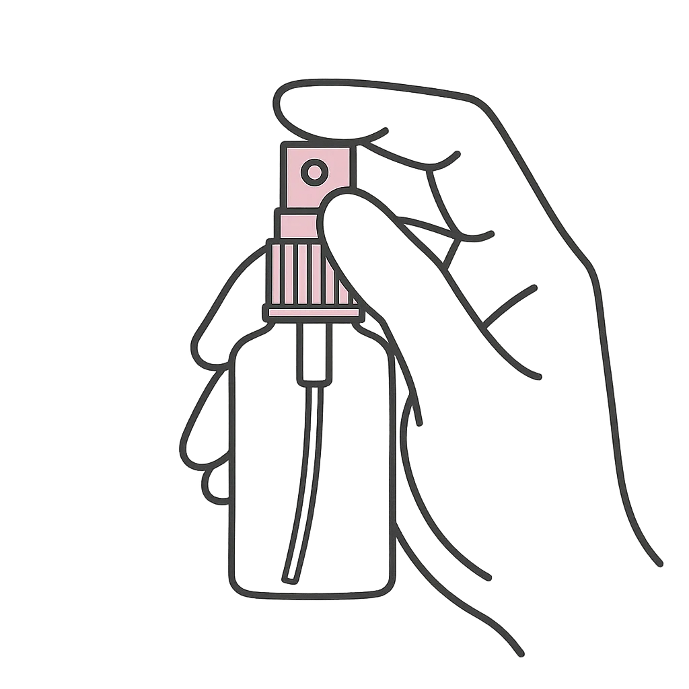
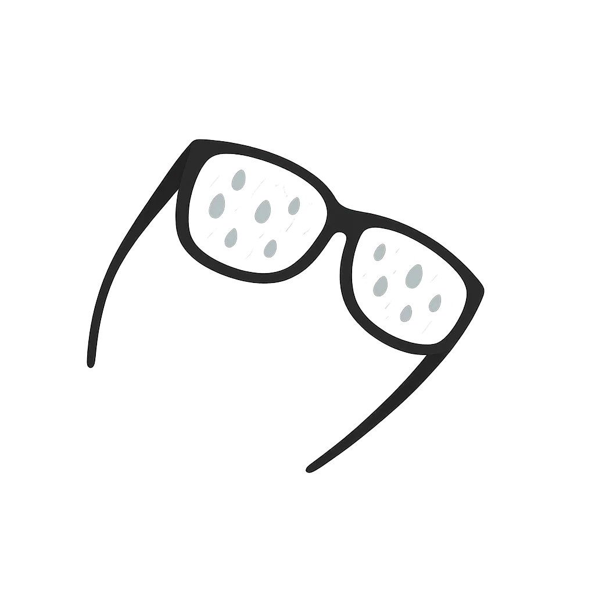
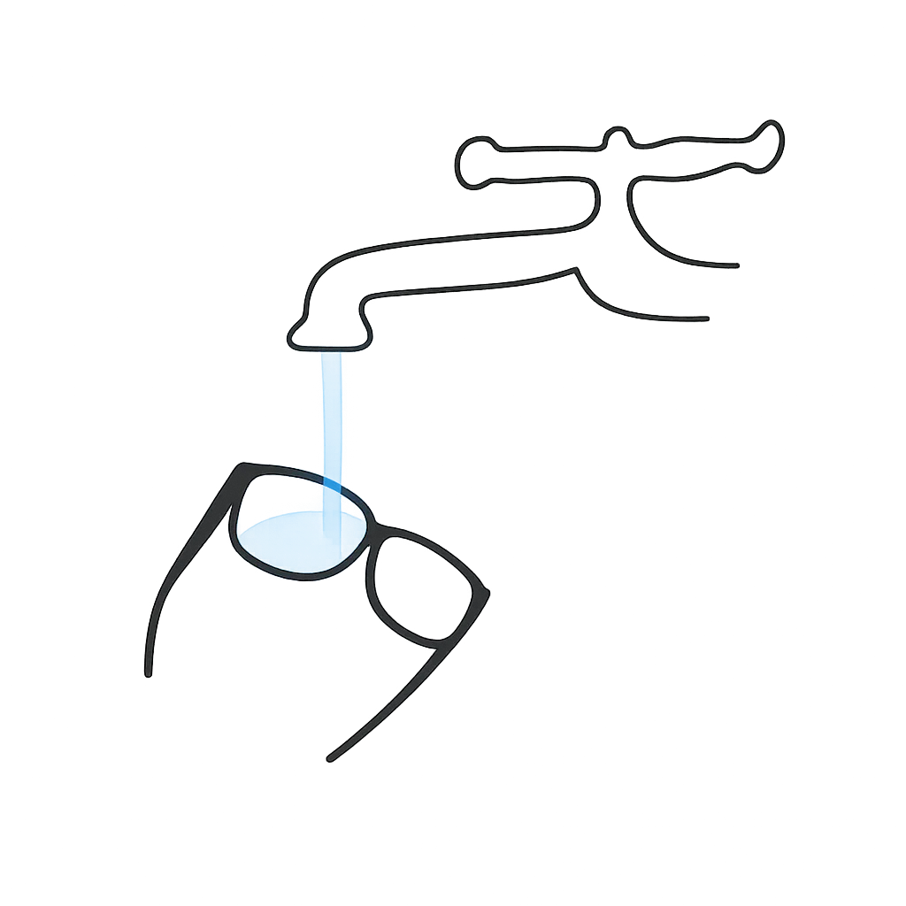

Lavando os óculos como eu gostaria de ter lavado nos últimos 20 anos
Após 20 anos usando óculos, acredito que encontrei um processo de limpeza que manterei pelo resto dos meus dias de óculos, que talvez também sejam o resto dos meus dias.
- Abra a torneira com pressão alta e deixe a água correr pelas lentes para retirar qualquer cisco preso nelas. A ideia é remover partículas sólidas que poderiam riscar as lentes nos próximos passos.
Borrife uma mistura de detergente neutro e água na proporção de 1:31. Espalhe gentilmente com os dedos (limpos!). Essa etapa exige cuidado, já que envolve tocar nas lentes. Opcionalmente, aplique sabão suficiente para que ele atue sem a necessidade de esfregar os dedos.

- Enxágue até remover todo o sabão. Nesse ponto, seus óculos estarão limpos, mas cobertos por pequenas gotas de água.
 - Diminua o fluxo da torneira. Posicione as lentes inclinadas em relação à água, de forma que ela escorra. Direcione o jato para a parte inferior das lentes: a água formará um arco que arrastará as gotas. Vá movendo os óculos lentamente para que o arco percorra toda a superfície, evitando resíduos de água. Repita o processo em ambas as lentes. Atenção: não deixe que o arco ultrapasse a borda superior, pois isso fará a água escorrer para o outro lado, formando gotas e exigindo repetição do processo.
 - Deixe os óculos na vertical para secar. O melhor momento para lavá-los é logo após o banho. Enquanto termina de se arrumar, eles estarão escorrendo. Ao pegá-los, pode haver gotas presas na armação. Seque apenas as bordas com a toalha, a roupa ou qualquer tecido, cuidando para não tocar nas lentes.
- Desfrute da sensação de usar óculos limpos como se tivessem acabado de sair da ótica.
Footnotes:
: “Neutro” refere-se à acidez do detergente. Todos os da marca Ypê são neutros, por exemplo. O Ypê amarelo se chama “neutro”, mas parece ser apenas por causa do perfume. Cheguei a passar quase uma hora pesquisando a real diferença entre as cores e não encontrei conclusão alguma. Uso o transparente só por estética.